We've had the picture of Hub Cycle for awhile, but were never sure where the picture was taken, nor who the other people in the picture were - I assumed they were just random anonymous workers. Cori did some investigation and looked at a current picture online of one of the old Hub addresses. Here's what we've got...
Hub Cycle circa 1900-1906, 29 Cooper St. North End, (building built in 1890):
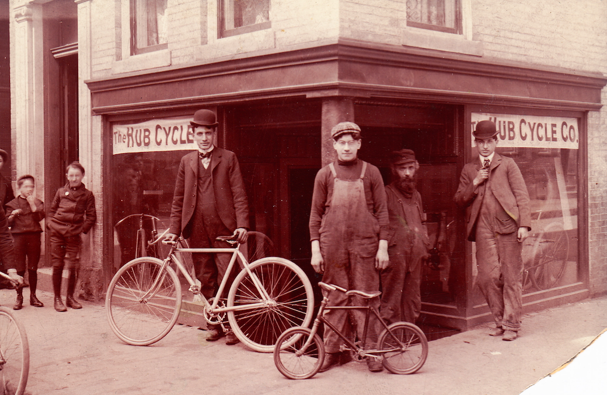
29 Cooper St., June 2017: one of 1st floor windows filled in, basement store turned into apartment,
transom above door on left filled in:
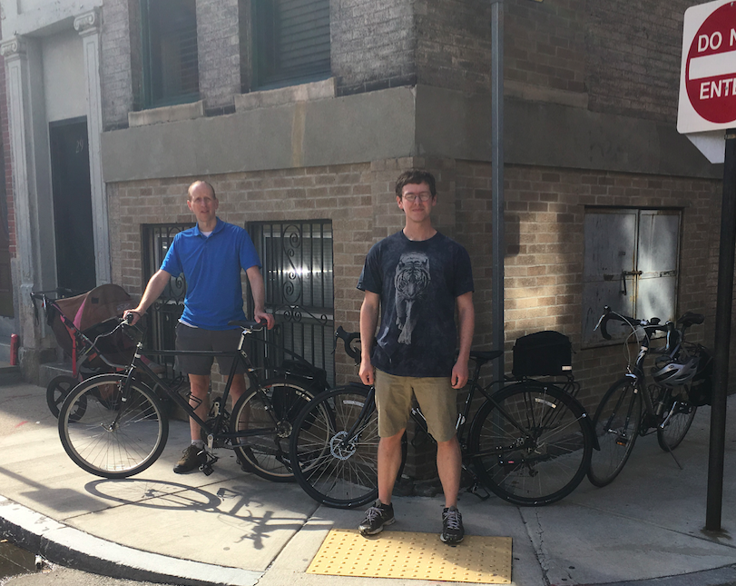
Here they are side-by-side:
Close up of black woodwork that was covered up; wood still underneath:

In 1900, it was the Berkowitz Brothers shop, implying that it was family owned and run
Who are the people with JB in the Hub Cycle photo, given it was a family business?
Here is JB's father Leopold in the Beckwith book, next to a closeup of a worker in the Hub Cycle photo:
 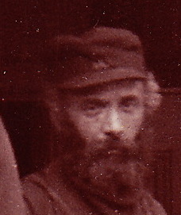
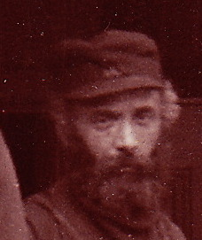
Recall that Leopold worked for JB in 1900 - this is his father!
Sam may be the other worker (I think someone said that Sam had his ear's pinned - but would it have been by the time this picture was taken?):
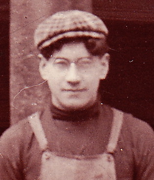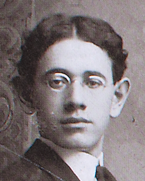
18 Cooper Street: the entire Berkowitz family lived there in 1900 and it is about 100 feet away from the store. The building was built in 1896:

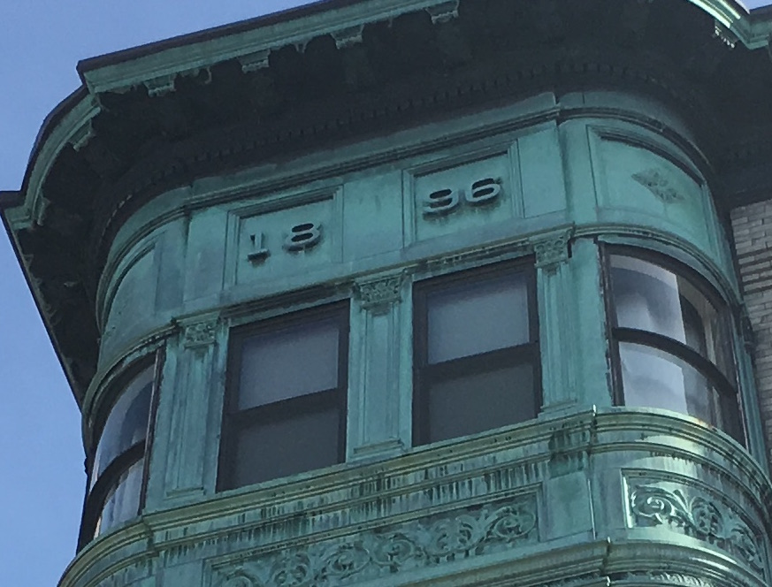
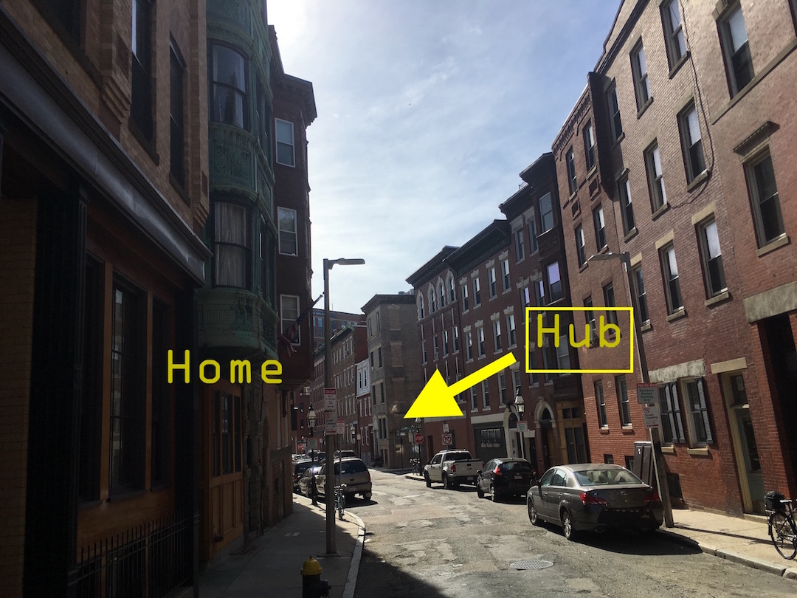
Who is the guy on the right in the original picture? Cori thinks it's Louis and it was the Berkowitz Brothers before it was Hub Cycle, but I don't think it looks like him. Then again, I'm used to just one or two pictures and Gail or Jon may remember what he actually looked like? Or maybe another relative can be given this link? Remember that it looks like all three other adults are Berkowitz', so it would make sense if this was one of the brothers. Also notice that he has a work overalls on.
Here's the lineup:
Who is this? Does he look like any of the brothers?
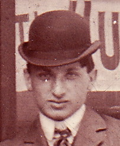
Ben, Albert, Joseph, Louis, Morris:
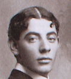
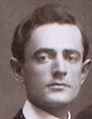
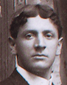
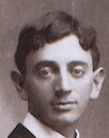
Note the difference in clothing (jacket, hat, tie), but they all wear work clothes:
 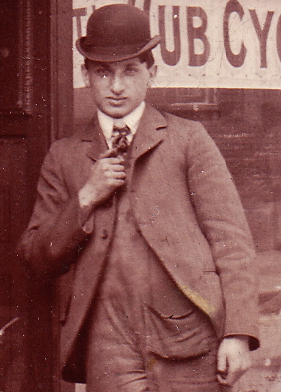
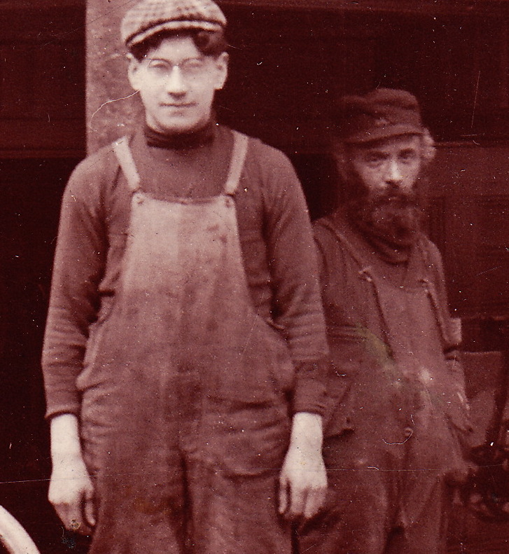
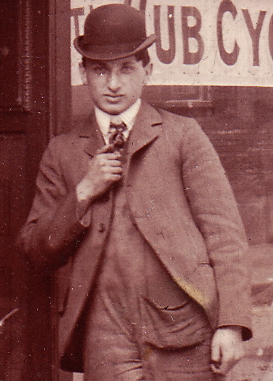
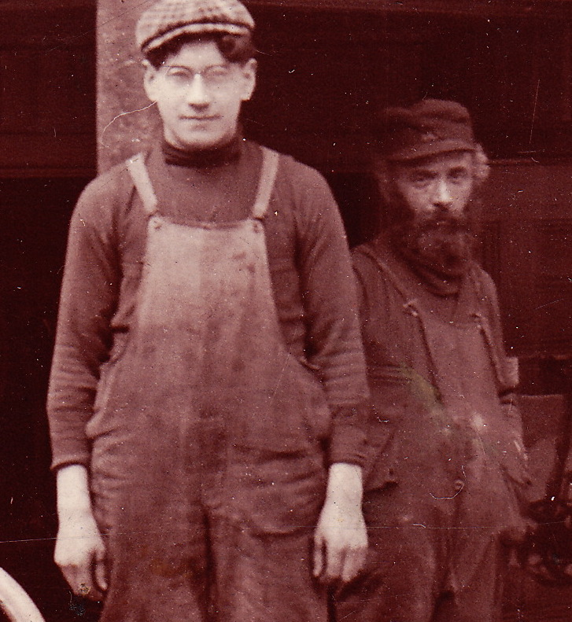